这轮升级三件事：出题多了「聊着出题」模式；题多了「案例推进式」（照一道好题的结构，一步步给信息、作答）；候选人做题多了真活插件这条路。出一道真活，不再填表。说一句要找什么样的人，出题助理自己去查企业、追问缺的信息、确认题意，然后出题、跑基线；哪里不对当场改。
填表出题（快，适合熟手）和聊着出题（AI 追问、解释、修订）。两种模式背后是同一套出题能力。
企业库里有没有这家、要找什么样的人、想考什么——它一次只问一件；用户不需要懂平台怎么运作。
有以前用过的题、内部考题，整段贴进对话，它照那道题的路数换成这家企业、换掉数字。
题在右侧打开；说一句「材料再加一份竞品数据」「难度降一点」，没提到的部分不动。
右上角切换。聊着出题的开场只有一个输入框和四张起手卡：直接说要找什么样的人、给一个岗位出题、照我们以前的题出、先聊聊再出。
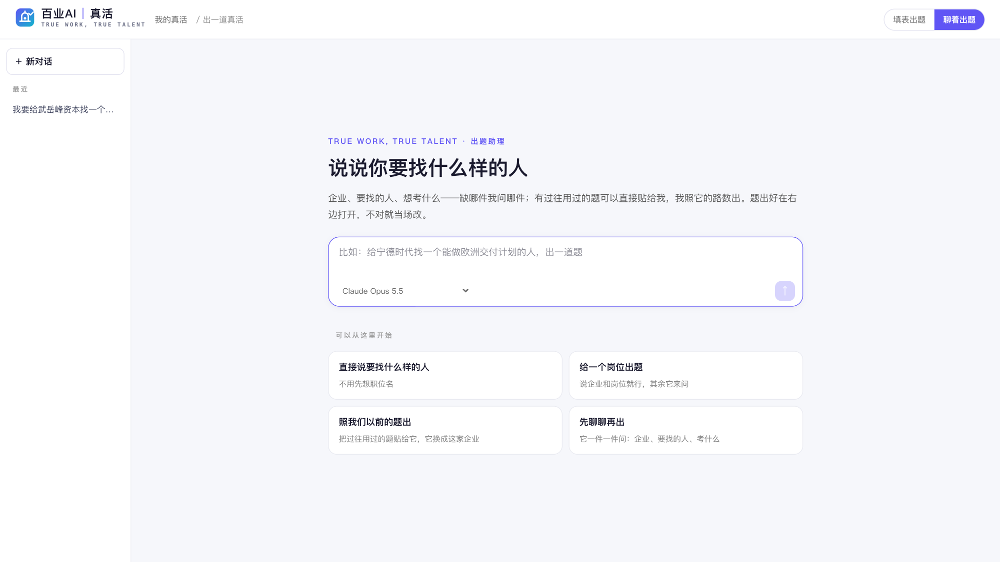
「我要给武岳峰资本找一个能看懂具身智能的人来做投资，出一道题。」——它自己到企业库里搜到这家、看了画像厚度（6 项、没有在招岗位），然后只问一件事：这道题想重点考什么，给四个选项，也可以自己打字。
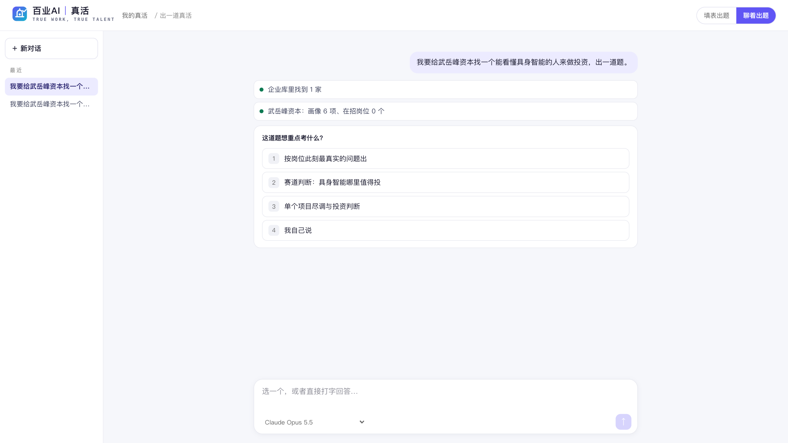
选了「赛道研判」之后，它问有没有以前用过的题或内部考题可以参照。有的话整段贴进对话，它会读成几步、每步问什么、参考答案、要算的数，出题时照这个路数换成这家企业。
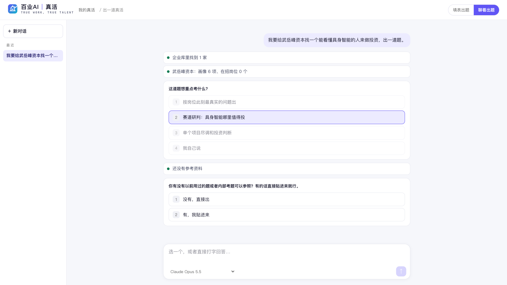
企业 + 要找的人 + 考什么，一句话说清，「确认，开始出 / 要改一下」。它不替人拍板，也不反复确认小事。
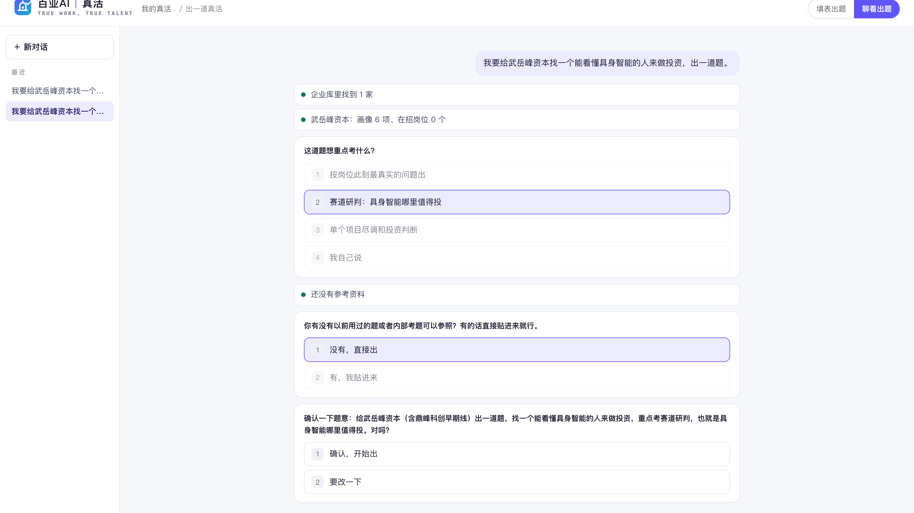
约 2 分钟出题（拼材料、锚定业务问题、任务书、材料包、带依赖的评分标准），接着 1 分钟跑 AI 基线。右侧就是这道真活的空间：复制参与链接发给候选人就能做。
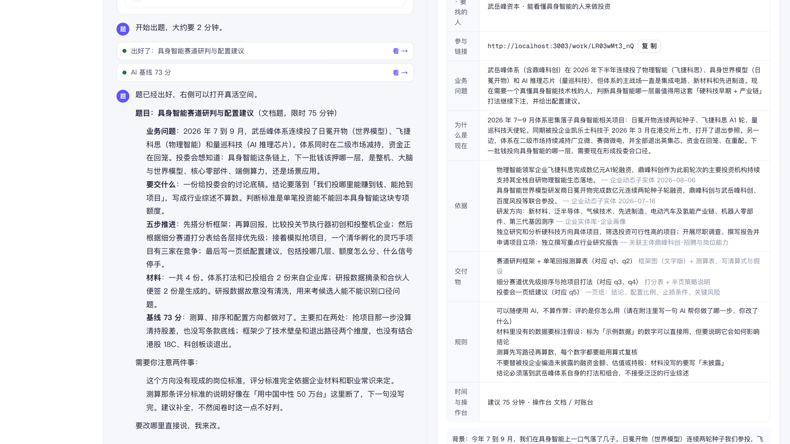
「材料里再加一份竞品的融资数据，时间压到 60 分钟」——按意见修订，没提到的部分原样保留；改完它会提醒基线要重跑。
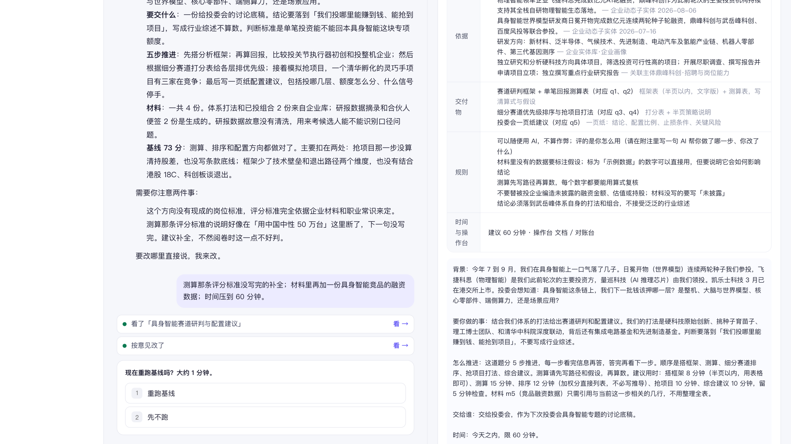
后台交一道公认的好题（商学院案例、咨询面试案例、内部考题），平台拆成推进步骤、每步给的信息、参考答案和要算的数；之后出题时按岗位和题型自动参照。出来的题分步推进：候选人一步一步看信息、作答；参考答案只有出题人和评卷 AI 看得到，测算的数由平台按算式重算。
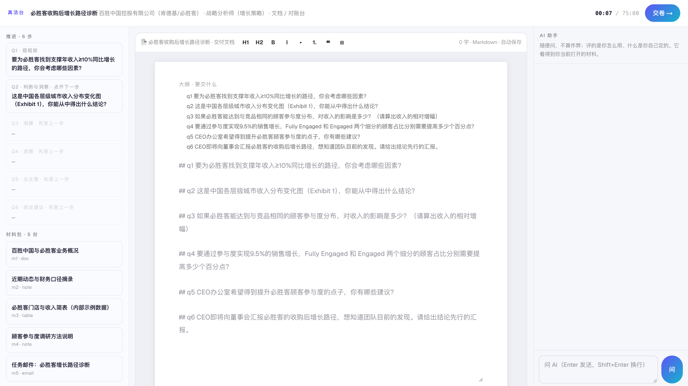
真活空间多一个「推进步骤」页：每一步问什么、给候选人什么信息、参考答案、要算的数（平台核算过的标「算式没核上」的会提示）。评卷按这些核对：测算 ±5% 内算对，判断题看结论和理由是否成立。
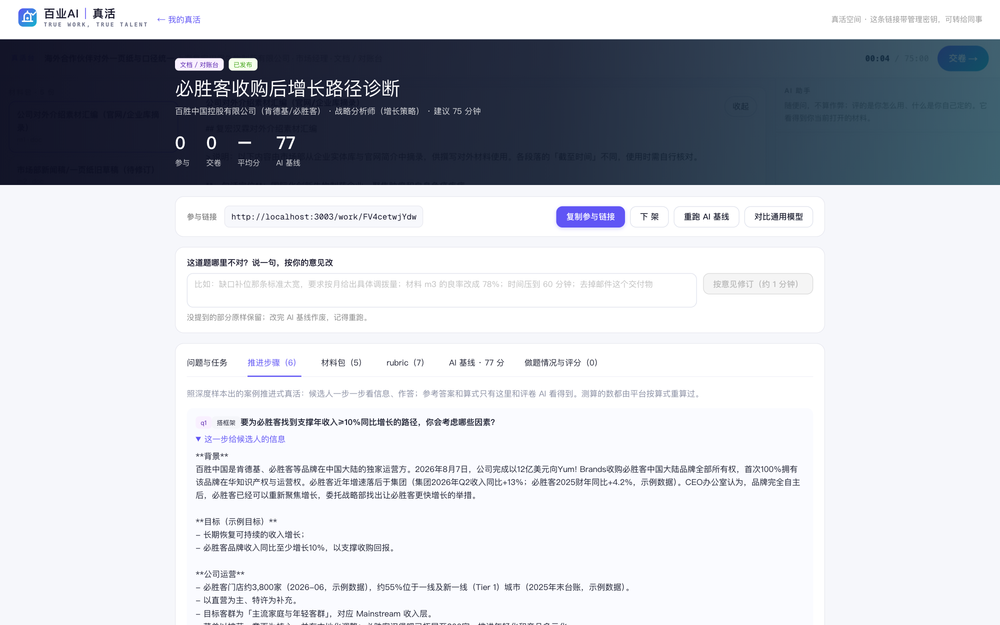
前三道从后台「填表出题」出，第四道是本说明里那段对话出的。链接带管理密钥，打开就是出题人视角（推进步骤、材料包、rubric、基线、做题情况）；「复制参与链接」发给候选人就能做。
| 题 | 企业 · 要找的人 | 怎么出的 | 步 | AI 基线 | 链接 |
|---|---|---|---|---|---|
| 必胜客收购后增长路径诊断 | 百胜中国 · 战略分析师（增长策略） | 照 McBurger 案例改背景换数字 | 6 | 77 | aidataoffice.com/work/FV4cetwjYdw/owner?k=46UqP7yTJ2AdyXed |
| 擎天租自营机队追加投资研判 | 高瓴资本 · 投资分析师 | 照 Space Explorer 案例改背景换数字 | 5 | 73 | aidataoffice.com/work/JIZ2F6WCNts/owner?k=HH_Ec_gUGPM-HND0 |
| 飞捷科思跟投与具身布局判断 | 武岳峰资本 · 「我要一个能看懂具身智能的人来做投资」 | 没给参考资料，后台自动挑参照、照结构出新题 | 5 | 79 | aidataoffice.com/work/UlopPAQtXog/owner?k=ttoZjPgBUfT-TE2O |
| 具身智能赛道研判与配置建议 | 武岳峰资本 · 同上，聊着出的 | 对话里确认题意后出，再按意见修订一轮 | 5 | 66 修订后重跑 | aidataoffice.com/work/LR03wMt3_nQ/owner?k=j-k452AC7glXkhcr |
后台 → 真活台 · 管理 → 「样本库 · 训练素材」tab 里是这两份样本（McBurger、Space Explorer）的骨架：几步、每步给什么信息、参考答案、算式。
聊着出题：aidataoffice.com/work/new/chat · 填表出题：aidataoffice.com/work/new
样本是「美国航天企业该不该做太空旅游」五问；换成高瓴此刻的处境后，五步的题型、问法、测算路径原样保留，故事和数字全换，答案由平台按算式重算。
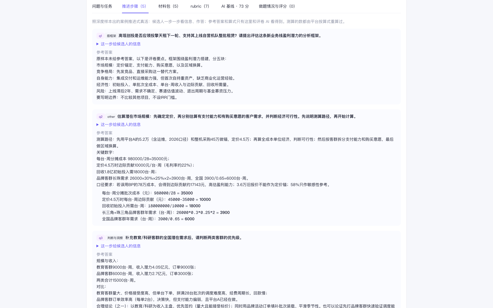
出题人什么参考都没给。生成器在后台按岗位和题型从训练素材里挑了 Space Explorer 当参照，照它的推进结构出了一道新题——用户全程不知道这一层。
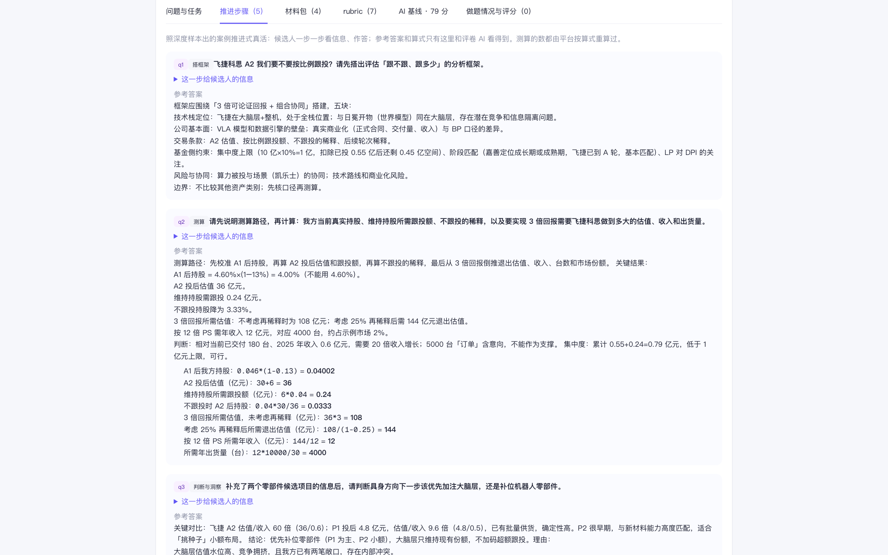
真活插件不再只在出题人指定时出现：候选人自己选。插件记浏览器里的网页工具和各家 AI；录屏留给装在电脑上的 Excel / CAD / IDE。
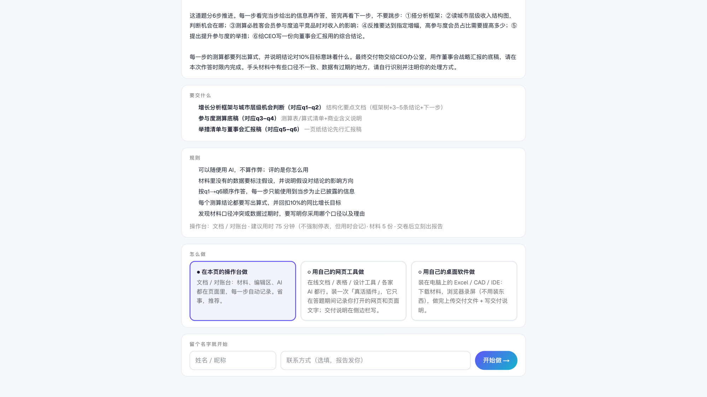
给老王判断：喂样本这件事有没有用。三组题用同一个出题模型和同一把评分尺，只差参照库：没有 → 老王给的 2 份 → 收集的 326 份。
没有样本，生成器只靠企业画像 + 岗位 + 职业典型任务。老王自己出的 5 道：高瓴被 ESG 岗位带偏两次、贴进去的案例被当题材合并、其余是整理 / 开放题。
老王给的 McBurger、Space Explorer 两份。出题人手选、改背景换数字。4 道，全是商业分析题。
326 份骨架：11 本 MBA 咨询 casebook 276 道 + 广东人社技能等级认定实操 36 份（30 个工种）+ 工程 take-home 4 份。出题人什么都不给，生成器自动挑参照。3 道，三种类型各一。
同一个需求三代（武岳峰 · 能看懂具身智能的人来做投资）并排看；工程师题、蓝领实操题像不像那回事；后台样本库点几份看骨架行家认不认。
| 题 | 企业 · 岗位 | 出题模型 | 基线 | 问题在哪 | 链接 |
|---|---|---|---|---|---|
| ESG-DCF 整合建模：为隆基绿能重估 | 高瓴 · 投资分析师 | qwen | 52 | 被 ESG 在招岗位带偏 | qyf7vRcSVbY |
| 基金 ESG 整合方法论交付 | 高瓴 · 投资分析师 | qwen | 53 | 同上 | pwAo_5R0K18 |
| Space Explorer 投资初筛 | 高瓴 · 投资分析师（案例贴进额外要求） | GPT | 65 | 案例被当题材合并，丢了分步和测算 | KG_RRI1HVRc |
| 构建 AI for Computing 能力图谱 | 鼎峰科创 · 投资分析师 AI 方向 | qwen | 67 | 开放题，没推进没测算 | Icm2xXhPIC0 |
| 鼎峰 AI 方向投资梳理与量巡速览 | 武岳峰 · 投资分析师 AI 方向 | qwen | 79 | 整理题，偏文书 | SRi1-_BfqFo |
| 题 | 企业 · 要找的人 | 参照 | 步 | 基线 | 链接 |
|---|---|---|---|---|---|
| 必胜客收购后增长路径诊断 | 百胜中国 · 战略分析师 | McBurger，改背景换数字 | 6 | 77 | FV4cetwjYdw |
| 擎天租自营机队追加投资研判 | 高瓴 · 投资分析师 | Space Explorer，改背景换数字 | 5 | 73 | JIZ2F6WCNts |
| 飞捷科思跟投与具身布局判断 | 武岳峰 · 能看懂具身智能的人来做投资 | 自动挑（只有 2 份可挑） | 5 | 79 | UlopPAQtXog |
| 具身智能赛道研判与配置建议 | 武岳峰 · 同上，聊着出的 | 同上，修订一轮 | 5 | 66 | LR03wMt3_nQ |
| 题 | 企业 · 要找的人 | 自动挑到的参照 | 步 | 基线 | 链接 |
|---|---|---|---|---|---|
| 具身智能三选一领投判断 | 武岳峰 · 能看懂具身智能的人来做投资（与第一轮同题） | Rock Energy（casebook） | 3 | 88 | 7U1PRPxQWVg |
| 千问导购推荐下单归因评测模块 | 阿里巴巴 · 数据工程师（代码台） | 软件工程师 take-home | 4 | 84 | 4M3njYU9GM0 |
| 德布勒森试产线电气排故与调试 | 宁德时代 · 电气维修技师 PLC（设计台当机考台） | 电工 · 三级技能考核样题（广东人社） | 4 | 79 | ZGAjovEtLYU |
训练前是「梳理 AI 方向投资 + 量巡速览」的整理题；第一轮是 5 步跟投测算；第二轮变成三个具身硬件项目的经营利润测算与领投判断，步数少了、每步更重。哪个更像投委会真会给分析师的活，请老王定。
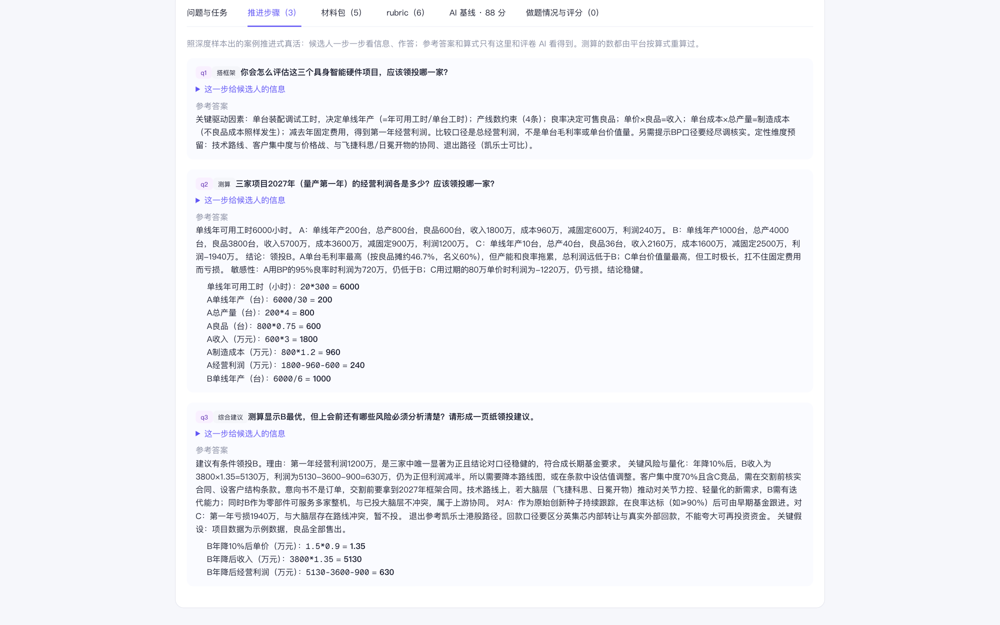
训练前和第一轮出不了这种题。参照的是工程 take-home 的口径：三个函数逐步实现（购买映射 → 命中指示 → 指标计算），最后一步交可运行工程 + README + 诚实的 Next Steps；每步的参考答案带数据样例和算式。
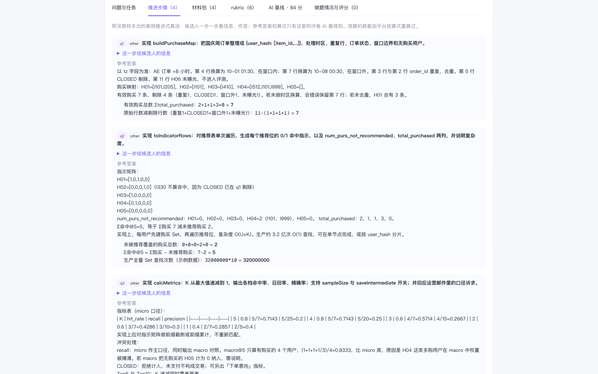
生成器自己从 326 份里挑到了广东人社的电工三级实操样题：排故 / PLC 液体混合 / 步进电机 / 变频器四个考核项目，原样换成德布勒森试产线的注液机、冷却液配比站、分度转台、出料线。设计台左边分步推进、中间画接线图、右边参数表带整定依据——这就是老王说的「自动生成的机考」雏形。
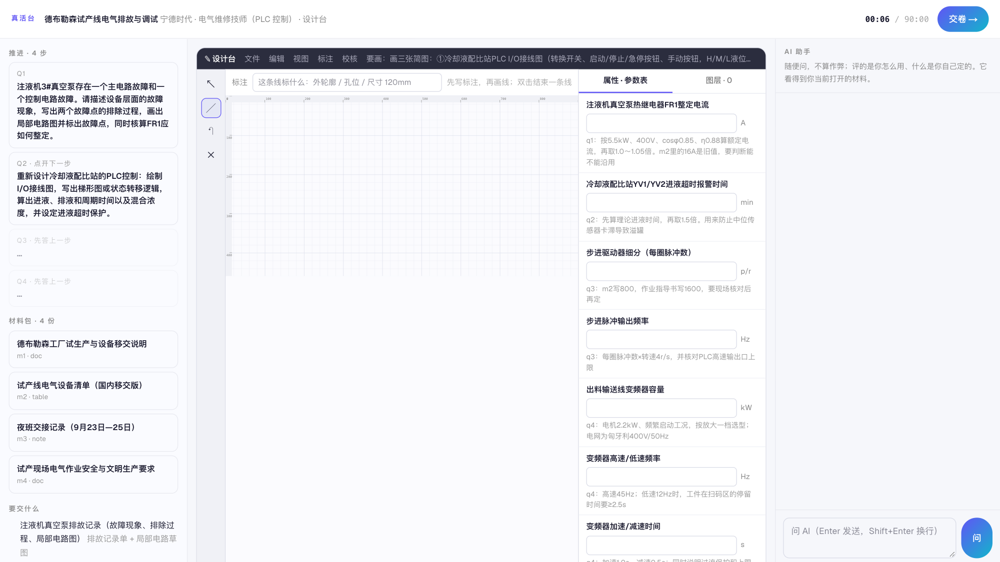
一道题拆成「几步、每步给什么、参考答案、要算的数、评分手法」；同一职业几十道拆完，共性就是这个职业的考核 mindset。出题先按岗位 / 题型挑最像的骨架，再换成这家企业的真实处境。三类参考集：咨询 / 商学院案例（思辨 + 测算）、工程 take-home（可运行交付 + rubric）、人社实操考核（工序 + 评分表 + 否定项）。入库即挂实体：职业、类型、标签、轮次；全部由工具跑，千问跑批，326 份零失败，测算算式代码核算。
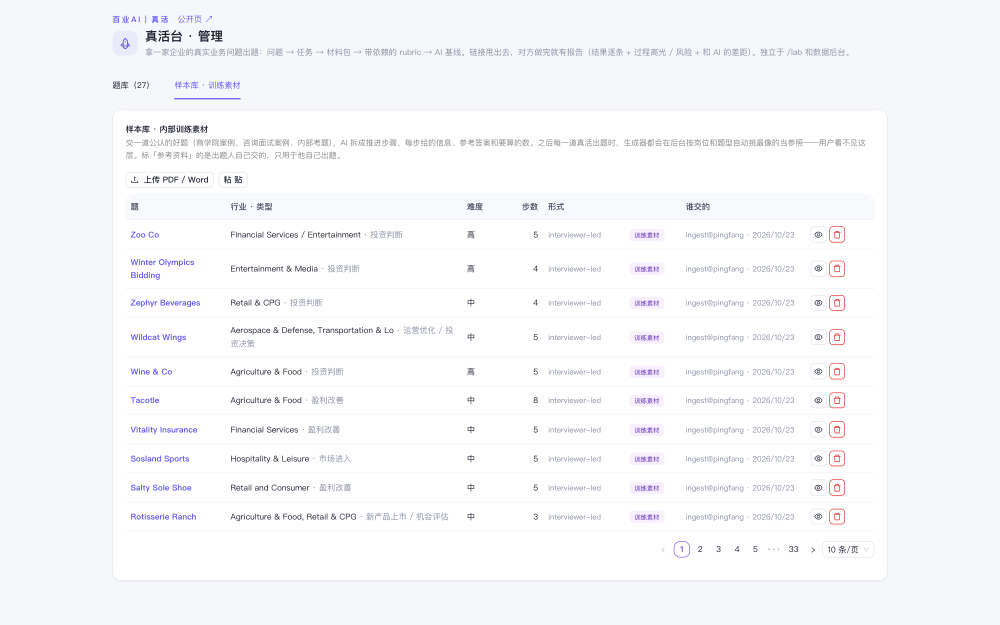
每周一批：更多 casebook、各省人社实操文件（广东还有 60 多个工种没下）、面经统计出职业骨架。工具 + 单一模型（千问）跑，人只抽查。蓝领 19 个工种职业库里还没有，补上即可把实操样本全部挂到职业实体。
老王说考试环境像「自动生成的 ATA 机考」。电路 / PLC / CAD / 数控这一类要一个自己的考试台：现在的设计台（参数表 + 接线图草图 + 说明）只是雏形，下一步做成能校核的机考台。
| 项目 | 输入 | 输出 | 费用（美元） |
|---|---|---|---|
| 样本解析 + 切题（333 次调用） | 130 万 | 64 万 | 13.4 |
| 出题 / 基线 / 评分 / 修订（52 次） | 45 万 | 36 万 | 6.7 |
| 工程与抽查（写工具、看骨架、改提示、写文档） | ≈ 200 万 | ≈ 20 万 | 9.0 |
| 合计 | ≈ 29 |
以后同样一批（300 份）用工具跑：解析部分约 13 美元，人只花抽查的时间。